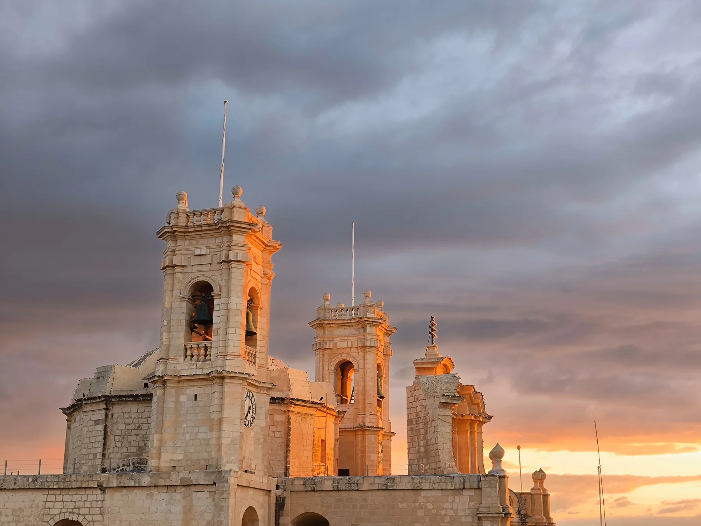

The square, church and older houses establish the centre. They do not make every address historic, quiet, level or close to the square.

L-GĦARB · GOZOVillage core.
Village core.
Western horizon.
An established village centre, a sanctuary landscape and a wider rural edge occupy different parts of western Gozo. The exact address still decides outlook, access, gradient and daily convenience.
READ THE LOCATION CAREFULLY
One name, several settings.
L-Għarb is a locality within the Gozo Region. Its village core, Ta’ Pinu setting, Ta’ Dbieġi and San Lawrenz edge, and the countryside towards the coast are useful viewing contexts, but they are not interchangeable.
Ta’ Pinu sits at the locality’s edge. Its landscape does not prove a shrine view, short walk or direct access from a listing.
Ta’ Dbieġi lies on the San Lawrenz edge; the western countryside and coast remain distinct from the village centre.
Ta’ Pinu is a destination, not a property promise.
Visit Gozo documents the sanctuary’s religious and landscape setting. Use it for cultural orientation while keeping views, access and walking conditions tied to a verified address.
Visit Gozo: Ta’ Pinu ↗Ta’ Dbieġi needs its own label.
The Malta Crafts Foundation places the artisan village on the outskirts of San Lawrenz, close to Ta’ Pinu. Studios and demonstrations remain live operator checks.
Malta Crafts Foundation ↗EVERYDAY CHECKS
Useful anchors, honest limits.
These current public-service and operator sources establish practical context. They do not identify the nearest stop or create a journey time from the locality centroid.
Council & library
The Civic Centre houses the Local Council and a branch library. Use the live council page for current hours and collections.
Council services ↗Gharb clinic
Primary HealthCare lists the Gharb Community Clinic and the Victoria Health Centre context. Availability and appointments can change.
Community clinics ↗Route 311
Malta Public Transport currently lists the Victoria–Dwejra corridor through L-Għarb and Il-Wilġa. Check live stops and departures.
Route 311 live page ↗Route 312
The operator currently lists the Victoria–Għarb–Victoria service through village stops and San Lawrenz. No connection is guaranteed here.
Route 312 live page ↗FOOD WITHOUT A RANKING
Two licensed examples, no “best of” list.
The MTA register anchors these names and addresses. It does not establish quality, price, cuisine, current hours or proximity to a particular home.
Brejku
The MTA restaurant register lists licence RST-32685 at 10 Triq l-Għarb. Recheck current operation directly before relying on it.
Salvina Restaurant
The MTA restaurant register lists licence RST-13054 at 21 Triq Frenċ ta’ l-Għarb. This is a licensing record, not an endorsement.
Continue with the right Gozo context.
Compare L-Għarb with the separate Ir-Rabat (Victoria) edition, Ix-Xagħra edition and Marsalforn edition. Their locality names, services and maps remain distinct.
No improvised route.
This preview draws no council boundary, property pin, straight-line walk, water shortcut, bus timetable, car-traffic estimate or taxi price. Any future route needs real permitted endpoints, routed geometry and a named mode and source.
Open the locality overview only when you need it.
The map frames L-Għarb and surrounding place labels for orientation. It deliberately draws no boundary, route, distance, travel time or listing location and loads from OpenStreetMap only after your click.
Address Registrar · Għarb Local Council · Visit Gozo: L-Għarb · Visit Gozo: Ta’ Pinu · Malta Public Transport 311 · Malta Public Transport 312 · Primary HealthCare · Malta Crafts Foundation · MTA restaurant register
No ranking, fixed opening hours, property-specific distance, guaranteed view, parking claim, accessibility promise or locality-wide journey time is implied.